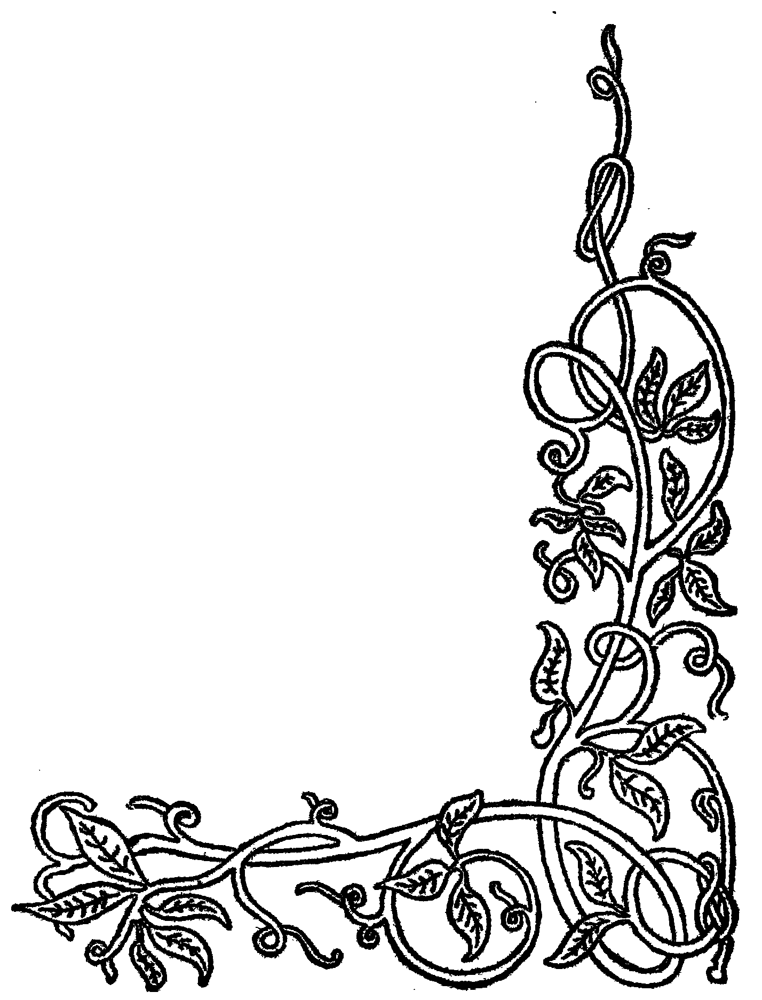
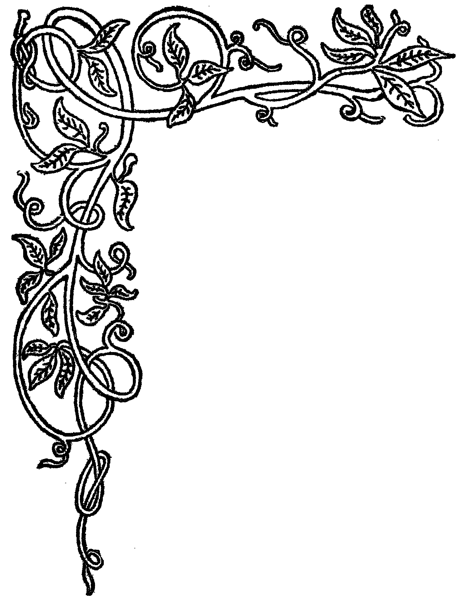
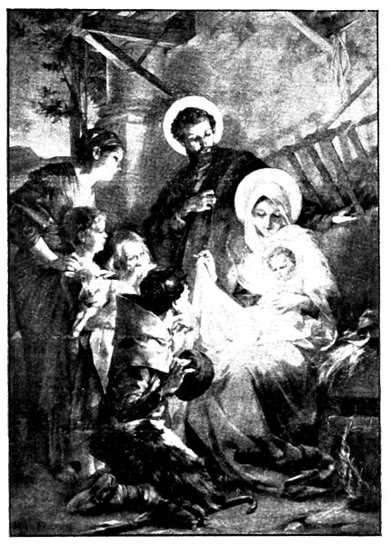
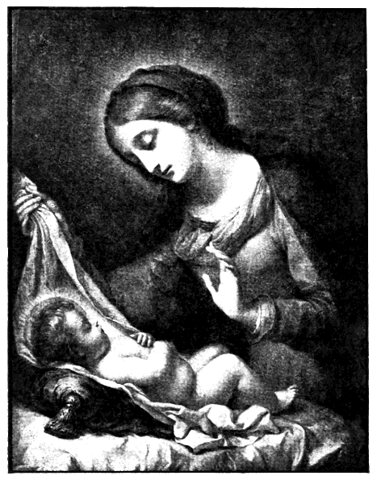

[Pg 1]
[Pg 2]
[Pg 3]
(See page 33.)

BY
ELEANOR C. DONNELLY
PHILADELPHIA
H. L. Kilner & Co.
PUBLISHERS
[Pg 4]
Copyright, 1898, by Eleanor C. Donnelly.
TO
MY REVERED FRIEND OF MANY YEARS,
Rev. Matthew Russell, S. J.,
Editor of the “Irish Monthly,” Dublin, Ireland,
THIS LITTLE BOOK IS DEDICATED
BY HIS SPECIAL PERMISSION.
[Pg 5]
[Pg 7]
| Prince Ragnal. |
| Christmas Carol. |
| At Dame Noël’s. |
| A Murillo. |
| The Stable of Bethlehem. |
| The Three Masses on Christmas Day. |
| The God-Man. |
| Bethlehem’s Queen. |

A Christmas Legend of Early Christian Ireland.
[Pg 10]
[Pg 11]
[Pg 12]
[Pg 13]
[Pg 14]
[Pg 15]
[Pg 16]
[Pg 17]
[Pg 19]
[Pg 20]
[Pg 21]

(See page 16.)
[Pg 22]
I.
II.
[Pg 25]
III.

This Babe—the Virgin’s sinless Boy—
Shall sin and hell and death destroy,
And heaven’s portals ope!
(See page 25.)
[Pg 26]
AN OLD-WORLD TRADITION.
[Pg 27]
[Pg 28]
[Pg 29]
[Pg 30]
[Pg 31]
[Pg 32]
[Pg 33]
[Pg 34]
I.
“The Lord hath said to me: Thou art my Son, this day have I begotten thee.”—Ps. ii, 7.
[Pg 35]
II.
“And they came with haste, and they found Mary and Joseph, and the Infant lying in a manger.”—Luke ii, 16.
[Pg 36]
III.
“A child is born to us, and a Son is given to us, and the government is upon his shoulders; and his name shall be called the Angel of great Council.”—Isaias ix.
[Pg 37]
[Pg 38]
“And going into the house, they found the Child with Mary, his Mother.”—Matt. iii, 11.
[Pg 39]
[Pg 40]